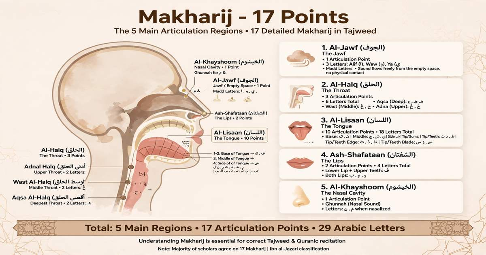

Makharij Al-Huruf: 17 Points of Articulation

Makharij Al-Huruf refers to the points of articulation from which the Arabic letters are pronounced. Learning the correct Makharij is essential for accurate Quran recitation and proper Tajweed.
What Are Makharij Al-Huruf?
Makharij Al-Huruf means the articulation points of the Arabic letters. According to the well-known classification, there are 5 main articulation areas containing 17 detailed points.
The 5 Main Makharij Areas
The 17 articulation points are organized into five major areas:
- Al-Jawf (الجوف) – The empty space of the mouth and throat
- Al-Halq (الحلق) – The throat
- Al-Lisan (اللسان) – The tongue
- Ash-Shafatan (الشفتان) – The two lips
- Al-Khayshoom (الخيشوم) – The nasal passage
The 17 Points of Articulation
Each Arabic letter has a specific place from which its sound begins. The 17 detailed articulation points are distributed among the five main areas.
1. Al-Jawf – الجوف
1 articulation point
Al-Jawf is the empty space inside the mouth and throat. It is the articulation area for the three long vowel letters:
2. Al-Halq – الحلق
3 articulation points
The throat contains three articulation areas:
- Deep throat: ء ، هـ
- Middle throat: ع ، ح
- Upper throat: غ ، خ
3. Al-Lisan – اللسان
10 articulation points
The tongue is responsible for the articulation of most Arabic letters. Different parts of the tongue meet different areas of the upper mouth and teeth to produce the correct sounds.
The tongue produces letters including:
4. Ash-Shafatan – الشفتان
2 articulation points
The two lips produce letters such as:
5. Al-Khayshoom – الخيشوم
1 articulation point
Al-Khayshoom is the nasal passage. It is associated with the Ghunnah sound, particularly in rules such as Ikhfa, Idgham with Ghunnah, and Iqlab.
17 Makharij at a Glance
1 Jawf + 3 Halq + 10 Lisan + 2 Shafatan + 1 Khayshoom = 17 articulation points
Why Are Makharij Important in Tajweed?
Learning Makharij helps you pronounce every Arabic letter from its correct place. This is especially important in Quran recitation because changing the articulation of a letter can change its sound and, in some cases, its meaning.
How to Improve Your Makharij
- Learn the articulation point of each Arabic letter.
- Listen carefully to a qualified Quran teacher.
- Practice difficult letters slowly and repeatedly.
- Compare your pronunciation with a correct recitation.
- Practice the letters in Quranic words and verses.
💡 Easy Way to Remember
The five main areas are: Jawf · Halq · Lisan · Shafatan · Khayshoom
Together, these areas contain the commonly taught 17 articulation points of the Arabic letters.
📚 Tajweed Series – 9 Rules
Continue learning Tajweed with the complete series:
Learn Quran and Tajweed Online
Want to improve your Arabic letter pronunciation and Quran recitation with a qualified teacher? Book a free trial lesson with Al Shimaa Quran Academy.